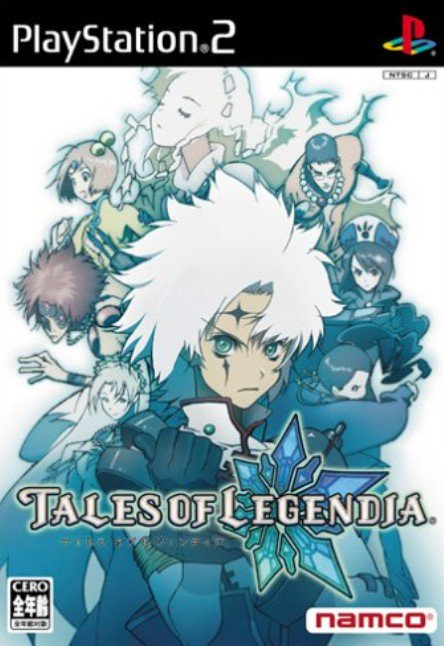

テイルズオブレジェンディア
 2005年8月25日発売プラットフォーム：PS2
シリーズ第7作目。
本作は開発陣がこれまでとは大きく異なっており、キャラクターデザインも藤島康介氏・いのまたむつみ氏ではなく中澤一登氏が担当している。舞台は“遺跡船”と呼ばれる島ほどの大きさの船のみのため、以前までの作品よりも移動範囲が著しく狭くなっている。グラフィックは3DCGが取り入れられ、戦闘の難易度は低めで格闘ゲームに近いシステム。ファンから特にサウンド面が評価されており、その中でも挿入歌の「蛍火」が高く評価されている。
今までのような世界を巡る冒険ではなく、一つの船を舞台に展開される話のため、世界中を飛び回り何かを解決するような他作品に比べ、一つの重要なものを掘り下げるようなストーリーになっている。また、キャラクタークエストというキャラクター別のサブイベントが用意されており、他キャラとの交流の様子を楽しむこともできるのが本作の魅力の一つだろう。
昨今、シリーズ内でリメイクされる作品や現在主流になっているプラットフォームへ移植作品が増えているが、本作は未だにどちらもないままなので、リメイクや移植を望む声も上がっている。